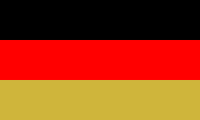
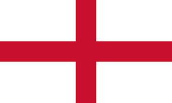
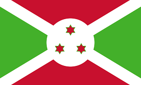

| Europa | Asia | África | Oceanía | America |
|---|---|---|---|---|
| Alemania | China | Angola | Australia | México |
| Francia | Japón | Luanada | Fiyí | Brasil |
| España | Rusia | Cabo Verde | Islas Marshall | Estados Unidos |
| Inglaterra | Siria | Burundi | Samoa | Chile |
| Holanda | India | Argelia | Tonga | Perú |
Alemania, como lugar de formación y ciencia, posee una importante reputación a nivel internacional: desde el sistema escolar hasta la formación profesional dual y su variado panorama de enseñanza superior.
Es el país más extenso de Europa Occidental (con cerca de 1/5 de la superficie de la UE) y cuenta con una gran zona marítima

España es una gran potencia turística y se erige como el segundo país más visitado del mundo

En las elecciones generales del Reino Unido de 2010 el Partido Conservador obtuvo la mayoría absoluta si se cuentan solo los 532 puestos para Inglaterra, obteniendo 61 escaños más que todos los otros partidos combinados.
Holanda es un país que está formado tanto por el Reino de los Países Bajos, como por Aruba, Curazao y Sin McAilen.

Ocupa la mayor parte de Asia Oriental y es el cuarto país más grande del mundo después de Rusia, Canadá y Estados Unidos.

El conocimiento y las habilidades generales de los jóvenes japoneses de 15 años según el Informe PISA coordinado por la OCDE están clasificadas como las terceras mejores del mundo.

Rusia es el país más grande del mundo con un territorio de más de 17millones de kilómetros cuadrados.

es un país soberano del Oriente Próximo, bañado por la costa levantina mediterránea,
es un país soberano ubicado en Asia del Sur. Con un estimado de más de 1428 millones de habitantes, es el país más poblado del mundo.

México abarca una extensión territorial de 1,964,375 km2, de los cuales 1,959,248 km2 son superficie continental y 5,127 km2 son superficie insular.
Delimitado por el océano Atlántico al este, Brasil tiene una línea costera de 7491 km.

Estados Unidos, situada en América del Norte, tiene una superficie de 9.831.510 Km2

Chile, oficialmente República de Chile, es un país soberano ubicado en el extremo sur de América del Sur.

oficialmente República del Perú, es un país soberano ubicado en el oeste de América del Sur.

es un país soberano que comprende la parte continental del continente australiano o Sahul, la isla de Tasmania y numerosas islas menores.

es un país insular de Oceanía ubicado en el océano Pacífico

son un país insular ubicado en el océano Pacífico, en la región de Micronesia. Formó parte del Territorio en Fideicomiso

es un país que comprende la parte occidental del archipiélago de Samoa, en el Pacífico Sur.

es un país de Oceanía integrado dentro de la Polinesia y constituido como una monarquía parlamentaria.
es un país ubicado al sur de África que tiene fronteras con Namibia por el sur, con Zambia por el sureste, con la República Democrática del Congo

Luanda es la capital y principal ciudad de Angola. Está situada en la costa del océano Atlántico, y es el principal puerto y centro económico del país.
Cabo Verde, cuyo nombre oficial es República de Cabo Verde, es un Estado soberano insular de África, situado en el océano Atlántico, más concretamente en el archipiélago volcánico macaronésico

es un pequeño Estado soberano, ubicado en la región de los grandes lagos en África Oriental, que carece de salida al mar.
es uno de los cincuenta y cuatro países que forman el continente africano.